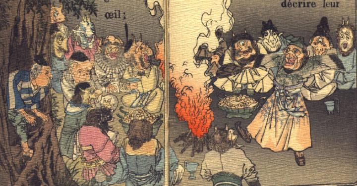

宴に興じる鬼たち。焚き火を囲み、ご馳走を並べている。1体の鬼が中央に進み出て、踊っている。頬に瘤を持つ老人が、木の洞から身を乗り出して、その様子を見ている。
著作者：J.Dautremer／出典：親書誌：U426_nichibunken_0123：Le vieillard et les démons／日付：2006／資源識別子：U426_nichibunken_0123_0003_0000
Copyright (c)2010- International Research Center for Japanese Studies, Kyoto, Japan. All rights reserved.